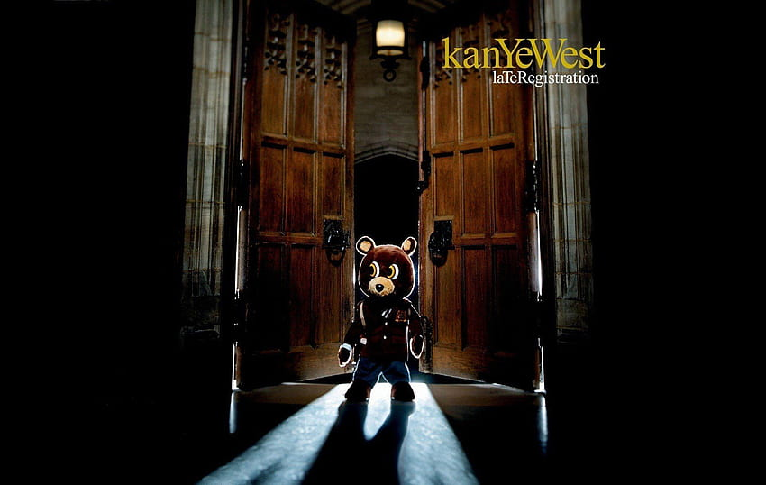

Late Registration
"Late Registration" es el segundo álbum de estudio del influyente rapero, productor y diseñador Kanye West, lanzado en 2005. El álbum es una continuación del estilo distintivo y la creatividad que West presentó en su debut, "The College Dropout". En "Late Registration", West expande aún más su paleta musical, incorporando una variedad de elementos sonoros que van desde el hip-hop y el rap hasta el soul, el R&B y la música clásica. El álbum también se destaca por su producción lujosa y su enfoque en la experimentación musical.